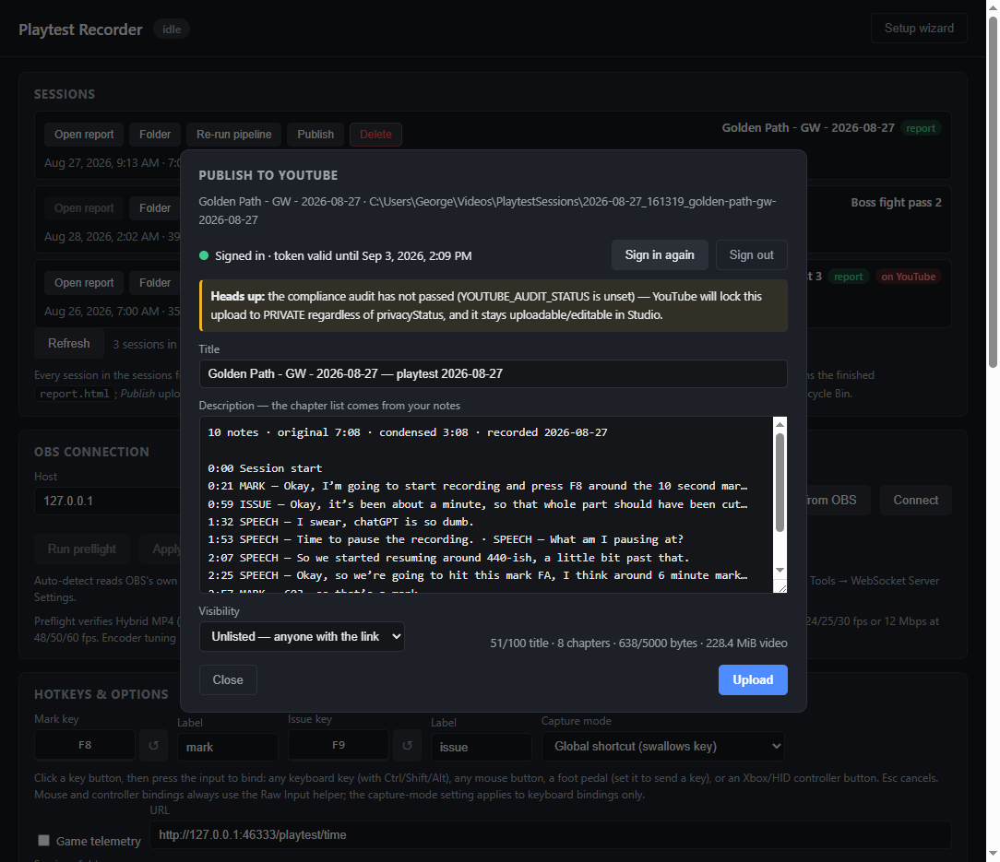

videos.insert actually receivesPlaytest Recorder makes one API call. Below is the exact request body, captured from the application's own dry-run mode on a real recorded session — not a hand-written example.

--dry-run)POST https://www.googleapis.com/upload/youtube/v3/videos?part=snippet,status&uploadType=resumable
{
"snippet": {
"title": "Golden Path - GW - 2026-08-27 — playtest 2026-08-27",
"description": "10 notes · original 7:08 · condensed 3:08 · recorded 2026-08-27\n\n0:00 Session start\n0:21 MARK — Okay, I'm going to start recording and press F8 around the 10 second mar…\n0:59 ISSUE — Okay, it's been about a minute, so that whole part should have been cut…\n1:32 SPEECH — I swear, chatGPT is so dumb.\n1:53 SPEECH — Time to pause the recording. · SPEECH — What am I pausing at? · SPEECH…\n2:07 SPEECH — So we started resuming around 440-ish, a little bit past that.\n2:25 SPEECH — Okay, so we're going to hit this mark FA, I think around 6 minute mark…\n2:57 MARK — 603, so that's a mark.\n\nGenerated by Playtest Recorder",
"tags": [
"playtest"
],
"categoryId": "20"
},
"status": {
"privacyStatus": "unlisted",
"embeddable": true,
"selfDeclaredMadeForKids": false
}
}
| Endpoints used | youtube.videos.insert — and no others. No search.list,
no videos.list, no channel, comment, subscriber or analytics reads. |
|---|---|
| OAuth scope | https://www.googleapis.com/auth/youtube.upload (single scope, write only) |
| OAuth client type | Desktop app, installed-app loopback flow (http://127.0.0.1:<port>) |
| Credential storage | Refresh token cached in the user's own profile at
%APPDATA%\playtest-recorder\youtube-token.json. Never transmitted anywhere else; deleted by
the app's Sign out. |
| Upload mechanics | Resumable upload, 8 MiB chunks, one at a time. Never concurrent, never batched, never scheduled or automatic. |
| Quota | 1,600 units per upload. At the requested 16,000 units/day that is ten uploads; peak 3,200 units/minute covers one upload plus one retry. |
| Default visibility | unlisted (the user may choose private or public) |
| Servers | None. The application has no backend; the request is made from the end user's own machine with their own credentials. |
| Privacy policy | https://gw1108.github.io/video-record-plus-notes/privacy |
| Terms of service | https://gw1108.github.io/video-record-plus-notes/terms-of-service |